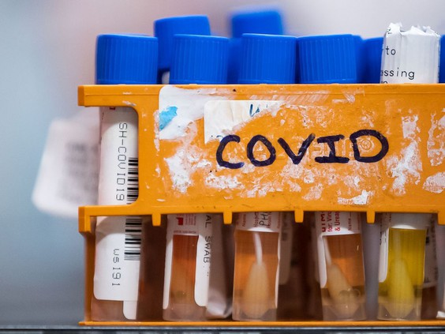

COVID-19: Two deaths and 249 new cases, Moderna shipment cut in half

Specimens to be tested for COVID-19 are seen inside a laboratory.
Saskatchewan reported two new deaths and another 249 new cases on Saturday as another challenge with shipments of Moderna vaccines hit the province and data issues delayed some statistics.
The next shipment of Moderna vaccines, which is expected to arrive on April 26, has been cut nearly in half according to a news release from the province. Initially Saskatchewan was set to receive 35,800 doses, but that has now been slashed to 18,800 doses.
'Language matters:' Presentation urges rethink of drug use perceptions
Kara Fletcher is an assistant professor of social work at the University of Regina and director of the institution's Social
Interviewing people working through drug addictions, Kara Fletcher quickly saw how the words used to describe them impacted how they saw themselves.
Fletcher, an assistant professor of social work at the University of Regina and director of the institution’s Social Policy Research Centre, interviewed 10 people accessing services at an outpatient substance use treatment centre in Saskatoon along with their clinicians.
Regina drive-thru vaccination clinic closed for two weeks
Hundreds of people line up to receive their COVID-19 vaccine at the Praireland Park drive-thru clinic on Monday morning.
Regina’s drive-thru vaccination clinic closed on Friday evening after exhausting its vaccine supply, and the province expects the clinic to remain closed for two weeks.
“Unless there is an unexpected increase in available vaccine supply, the Regina drive-thru clinic is not anticipated to re-open until May 2,” the province said in a news release on Saturday.